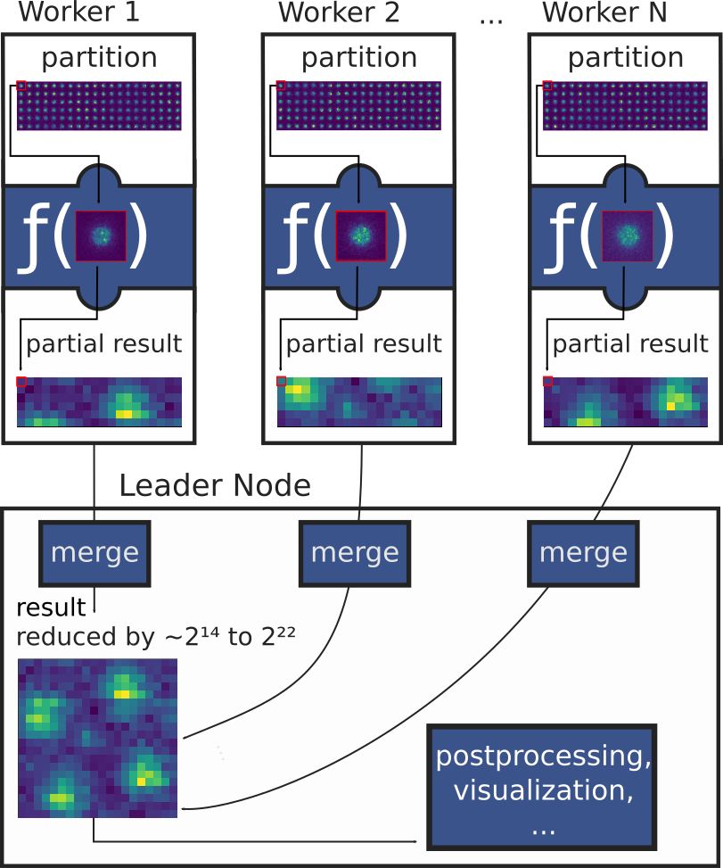

User-defined functions (UDFs)
A common case for analyzing big EM data sets is running a reduction operation on each individual detector frame or other small subsets of a data set and then combining the results of these reductions to form the complete result. This should cover a wide range of use cases, from simple mathematical operations, for example statistics, to complex image processing and analysis, like feature extraction.
The user-defined functions (UDF) interface of LiberTEM allows you to define and run your own reduction functions easily, without having to worry about parallelizing, I/O, or the details of buffer management. This corresponds to a simplified MapReduce programming model, where the intermediate re-keying and shuffling step is omitted.
LiberTEM ships with some utility UDFs that implement general functionality:
Also, LiberTEM includes ready-to-use application-specific UDFs.
It can be helpful to review some general concepts before reading the following sections.
Getting started
The easiest way of running a function over your data is using the
map() method of the LiberTEM API. For example,
to calculate the sum over the last signal axis:
import functools
import numpy as np
result = ctx.map(
dataset=dataset,
f=functools.partial(np.sum, axis=-1)
)
# access the result as NumPy array:
np.array(result)
# or, alternatively:
result.data
The function specified via the f parameter is called for each frame / diffraction pattern.
See Auto UDF for more details. This is most suited for simple functions; once you have
parameters or want to re-use some data across function calls, you should create a
UDF subclass instead.
functools.partial() is a higher-order function that allows to create a new
function by wrapping an existing function and passing additional parameters to
it. In this case, the resulting call to numpy.sum() within
ctx.map(...) is numpy.sum(frame, axis=-1). See
https://docs.python.org/3/library/functools.html#functools.partial for more
details.
Example notebook
See the following notebook for a demonstration of basic UDF functionality. It can be downloaded from our example collection on GitHub.
How UDFs works
{kind=link}
To allow for parallel processing, data is first divided into partitions along the navigation axes,
which are worked on by different worker processes. Then, for each frame of a partition, a
user-defined function process_frame() is called,
which is free to do any imaginable processing.
As a result of splitting the data set into partitions, the results then need to be merged
back together. This is accomplished by calling the merge() method
after all frames of a partition are processed.
In pseudocode, data is processed in the following way:
result = empty
for partition in get_partitions(dataset):
partition_result = empty
for frame, frame_slice in get_frames(partition):
frame_result = process_frame(frame)
partition_result[frame_slice] = frame_result
merge(dest=result, src=partition_result)
In reality, the loop over partitions is run in parallel using multiple worker processes, potentially on multiple computers. The loop over individual frames is run in the worker processes, and the merge function is run in the main process, accumulating the results, every time the results for a partition are available.
In addition to process_frame(), there are two more methods
available for overriding, to work on larger/different units of data at the same time:
process_tile()
and process_partition(). They can be used for optimizing
some operations, and are documented in the advanced topics section.
More about UDFs
Now would be a good time to read more about implementing UDFs and advanced UDF functionality. The general section on debugging helps with resolving issues. Once you have your UDF working, you can proceed to UDF profiling to gain insights into the efficiency of your UDF.
- Implementing a UDF
- Running UDFs
- Live Plotting
- Partial results
- Asynchronous execution
- User-defined functions: advanced topics
- Tiled processing
- Partition processing
- Precedence
- Post-processing of partition results
- Post-processing after merging
- Pre-processing
- AUX data
- Task data
- Meta information
- Preferred input dtype
- CuPy support
- Sparse arrays
- Threading
- Auto UDF
- One-step merge (merge_all)
- Profiling UDFs
See also
- UDF API reference
API documentation for UDFs